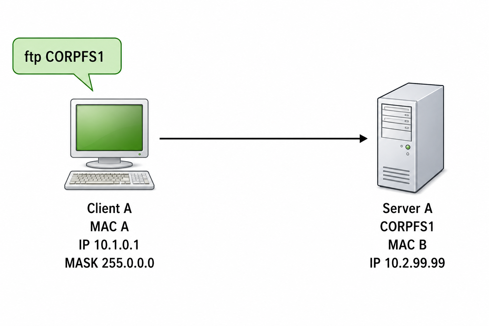
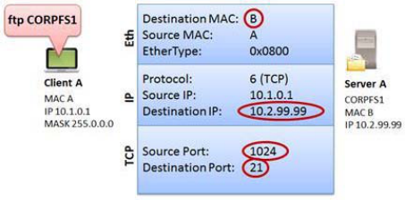
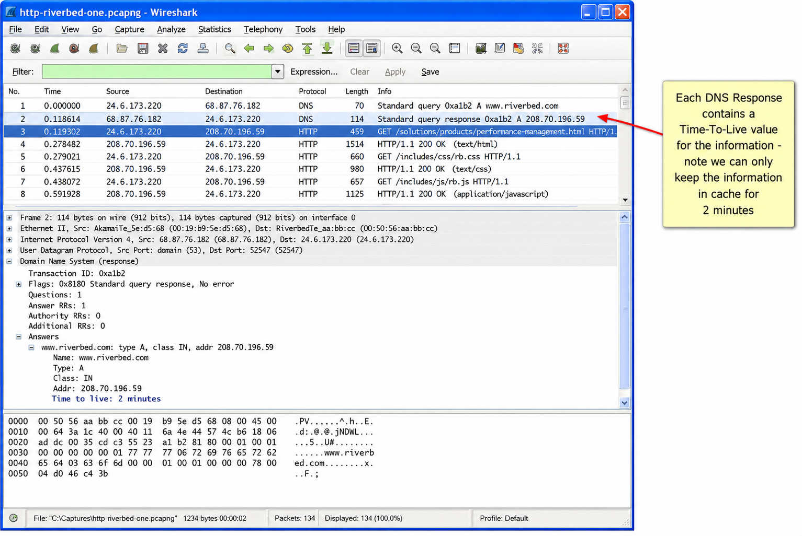

The TCP/IP stack is described as layered. Network faults are often attributed to the TCP/IP protocol or application layer. If a client can successfully ARP and receive a response, but cannot complete a DNS query, which layer has a problem — and what would your next move be in Wireshark?
TCP/IP Functionality Overview
In order to troubleshoot or secure a network using Wireshark (or any network analyzer), you must possess a solid understanding of TCP/IP communications. In the next twelve chapters we examine the most common traffic patterns seen on a TCP/IP network.

Figure 179 depicts the key TCP/IP stack elements next to the TCP/IP Model (formerly referred to as the "DoD Model") and the OSI Model. Although TCP/IP elements match up nicely with the TCP/IP Model, the OSI Model is still referred to constantly in our industry. "Layer 2" devices (switches) and "Layer 3" devices (routers) obtain the numerical designation based on the OSI Model, not the TCP/IP Model.
Many network faults or breaches can be attributed to TCP/IP protocol or application issues. When we troubleshoot from the bottom up, we first look for errors at the physical and data link layers — can a host send bits onto the wire? Are those packets properly formed with a correct checksum? Next we move up the TCP/IP stack to determine if problems are visible. To recognize these problems, we need to know what normal behavior is.
Key TCP/IP Protocols
- Internet Protocol (IPv4/IPv6) — acts as the routable network layer protocol used to get packets from end-to-end on a network. Routers use the information contained in the IP header to make forwarding decisions. Layer 3 switches can route traffic as well.
- User Datagram Protocol (UDP) and Transmission Control Protocol (TCP) — provide connectionless and connection-oriented transport layer services respectively. The port fields in UDP and TCP headers define the application in use. TCP headers contain fields that offer sequencing and acknowledgment services as well. UDP and TCP are mapped to Layer 4 (Transport Layer) of the OSI Model.
- RIP and OSPF (Routing protocols) — examples of protocols that provide network and path information exchange between routing devices.
- ICMP/ICMPv6 — used to provide network information and is typically recognized as the protocol used for ping. ICMPv6 is used to check and see if an IPv6 address is already in use (duplicate address detection).
- DNS (Domain Name System) — provides host name-to-IP address resolution services. When you type
telnet station3, DNS resolves the name station3 to its IP address. Other name elements (such as Mail Exchange or MX records) can be resolved with DNS as well. - DHCP (Dynamic Host Configuration Protocol) — provides dynamic client configuration and service discovery services — not just IP address information. DHCP can also provide default gateway settings, DNS server settings and more.
- ARP (Address Resolution Protocol) — provides hardware address lookup services for a local device. ARP also enables us to check and see if an IPv4 address is already in use (duplicate address test).
The book says: "Before analyzing traffic to identify faults, you need to know what is considered normal network communication." This sounds obvious, but what does "normal" actually mean in practice — and how would you establish a baseline for a network you've never seen before?
When Everything Goes Right
If all goes well in TCP/IP communications, clients locate services quickly. Those services respond rapidly to requests and the client systems never need to request a service more than once. An analyzer can reveal large delays between communications, name resolution faults, duplicate requests and retransmissions, insecure applications and much more.
Before analyzing traffic to identify faults, you need to know what is considered normal network communication. This is where a baseline can be quite useful. For more detail on what traces should be taken to create a baseline of normal network communications, refer to Chapter 28: Baseline "Normal" Traffic Patterns.
TCP/IP uses up to six resolution steps before a single packet can be sent. Three of these steps generate network traffic (visible in Wireshark) and three do not. If you open a trace file and see a TCP SYN as the very first packet — no ARP before it, no DNS before it — what can you conclude about the state of the client's caches, and how confident can you be in that conclusion?
Follow the Multi-Step Resolution Process
TCP/IP uses a multi-step resolution process when a client communicates with a server, as shown in Figure 180. In our example, both the client and the server are on the same network. This process includes the following steps:
- Define the source and destination ports (port number resolution) used by the application.
- Resolve the target name to an IP address (network name resolution), if necessary.
- If the target is on the local network, obtain the hardware address of the target (local MAC address resolution).
- If the target is remote, identify the best router to use to get to the target (route resolution).
- If the target is remote, identify the MAC address of the router (local MAC address resolution again).

We will use the example scenario in Figure 180 and the TCP/IP flow diagram in Figure 181 to examine the TCP/IP resolution processes.

Step 1: Port Number Resolution
In our example, the user has typed ftp CORPFS1. FTP typically uses port 20 or a dynamic port to transfer data and port 21 for commands such as login and password submission functions (USER and PASS). In our example, the client is attempting to connect to the FTP server using port 21. This port number is contained in the etc/services file on the client. This number would be placed in the TCP header destination port field of the outbound packet. The client would use a dynamic (ephemeral) port for the source port field value.
Step 2: Network Name Resolution (Optional)
If an explicit destination IP address has been defined by the client, the network name resolution process is not necessary. If the client has defined a destination host name (CORPFS1 in our example), the network name resolution process (aka the "resolver" process) is required to obtain the IP address of the target host.
The name resolution specification dictates that you must follow a specific order when performing the resolver process:
- Look in DNS resolver cache for the name.
- If the entry is not in DNS resolver cache, examine the local hosts file (if one exists).
- If the local hosts file does not exist or the desired name/address is not in the hosts file, send requests to the DNS server (if one has been configured for the local system).
If there is no answer from the first DNS server on the configured DNS server list, the client can retry the query to the first DNS server or query the next DNS server known. Still no answer? No more DNS servers known? The client cannot build the packet if it cannot resolve the value to be placed in the destination IP address field.
Step 3: Route Resolution — When the Target is Local
During this process, the client determines if the destination device is local (on the same network) or remote (on the other side of a router). The client compares its own network address to the target network address to determine if a target is on the same network. In the example shown in Figure 180, the client's IP address is 10.1.0.1/8 (network 10). The server's IP address is 10.2.99.99. The target is also on network 10.
Consider the possible results depending on the client's IP address and subnet mask:
- Source address 10.1.22.4 with subnet mask 255.0.0.0 = CORPFS1 is local (go to step 4)
- Source address 10.1.22.4 with subnet mask 255.255.0.0 = CORPFS1 is remote (go to step 5)
- Source address 10.2.22.4 with subnet mask 255.255.0.0 = CORPFS1 is local (go to step 4)
Step 4: Local MAC Address Resolution
If the destination device is local, the client must resolve the MAC address of the local target. First the client checks its ARP cache for the information. If it does not exist, the client sends an ARP broadcast looking for the target's hardware address. Upon receipt of an ARP response, the client updates its ARP cache.
This process may generate traffic on the network as designated with TX in Figure 181. If the MAC address is in cache, no packets will be sent. If an ARP query must be sent, it will be seen in the trace file.
Step 5: Route Resolution — When the Target is Remote
If the destination device is remote, the client must perform route resolution to identify the appropriate next-hop router. The client looks in its local routing tables to determine if it has a host or network route entry for the target. If neither entry is available, the client checks for a default gateway entry. This process does not generate traffic on the network.
The default gateway offers a path of 'blind faith' — since the client does not have a route to the destination, it sends the packet to the default gateway and just hopes the default gateway can figure out what to do with the packet. Default gateways typically either: forward the packet (if they have the best route to the destination), send an ICMP redirection response pointing to another local router, or reply indicating they have no idea where to send the packet (ICMP Destination Unreachable/Host or Network Unreachable).
Step 6: Local MAC Address Resolution for a Gateway
Finally, the client must resolve the MAC address of the next-hop router or default gateway. The client checks its ARP cache first. If the information does not exist in cache, the client sends an ARP broadcast to get the MAC address of the next-hop router, and updates its ARP cache.
Figure 183 shows http-riverbed-one.pcapng (visiting www.riverbed.com after clearing DNS and browser cache). There are NO ARP queries, DNS queries appear, then a TCP SYN. A second trace (http-riverbed-two.pcapng, 89 seconds later) has many fewer DNS queries. What does the different DNS behavior between the two traces tell you — and what should you infer about the DNS TTL values in the first trace?
Build the Packet
If all goes well (and in this case the destination is local), we should have resolved the following information during this process as shown in Figure 182:
- Destination MAC address
- Destination IP address
- Source and destination port numbers

With all this information resolved, the client can build and send the first packet. Let's examine this process in a trace file.

When examining http-riverbed-one.pcapng, we can learn the following:
- There are no ARP queries in the trace file. The client, 24.6.173.220, must have the required MAC addresses in ARP cache. We can run
arp -ato view the contents of the ARP cache. - We see DNS queries for www.riverbed.com. This query indicates that the client does not have the IP address for www.riverbed.com in DNS cache. In our example, the client is running both IPv4 and IPv6 stacks so it makes DNS queries for both the A record (IPv4 address) and AAAA record (IPv6 address) of www.riverbed.com. The client receives a DNS response providing the IPv4 address of www.riverbed.com in packet 2. The IPv4 address received in packet 2 is now placed in the client's DNS cache and can remain in the cache for the time defined in the Time to Live field in the DNS Answer section of packet 2 — just 2 minutes. Note that the client made a DNS query for the AAAA record, but the response in packet 4 does not provide an IPv6 address — it only contains the authoritative name server for that domain. The client will not be able to communicate with www.riverbed.com using IPv6.
- In packet 5, the client begins the TCP handshake by sending a TCP SYN using the dynamic source port 8369 and destination port 80. The packet is sent to the hardware address of the default gateway and the IP address of www.riverbed.com.
The rest of the trace file shows the TCP connection process and the request to get the main page at www.riverbed.com. The entire trace file contains 1,492 packets.
What do we expect to see when we visit the www.riverbed.com site again within just 89 seconds? Open http-riverbed-two.pcapng and compare this to the previous trace file.
When examining http-riverbed-two.pcapng, we notice the lack of DNS queries at the start. This indicates that the client has some of the desired IP addresses in DNS cache now so there is no need to generate a DNS query for those names. Many of the DNS responses in http-riverbed-one.pcapng only allowed the client to maintain name resolution information in cache for a short time — less than our 89 seconds between browsing sessions. We can see that our browser sent DNS queries to resolve those names again in http-riverbed-two.pcapng.
You will also notice that the total number of packets in http-riverbed-two.pcapng is only 319. Besides obtaining some of the DNS information from cache, the browser also displayed many page elements from cache and the total packet count will be reduced.
arp -a (Windows/Linux) to see ARP cache, ipconfig /displaydns (Windows) to see DNS resolver cache.
Watching the traffic enables us to point the finger at the problem and also point the finger at the areas that are not part of the problem.
When we noticed our email connections weren't working suddenly and Outlook just sat there in a state of confusion, we grabbed a trace file of the traffic.
We could see the ARP process followed by the DNS request for smtp.packet-level.com. The response provided us with the correct IP address of the SMTP server. Then the problem appeared.
We saw the client make a handshake attempt to the SMTP server. No answer. The client tried again and again. Still no answer.
The problem could be along the path or at the SMTP server itself. We saw successful TCP handshake processes when trying to connect to the SMTP server on another port that we knew was open. We tried to connect to the SMTP port from another location and experienced the same problem. We could connect successfully to the other port, however. It felt like the path was not the problem and that the SMTP server was the problem.
Restarting the SMTP server restored access to email services.
By examining the traffic we could rule out problems with the local network interface card, the ARP discovery process and the DNS server. Analyzing the traffic takes out so much of the guesswork.
TCP/IP Analysis Overview
TCP/IP communications must follow a standard set of rules that includes numerous resolution processes to determine the port numbers to use, the target IP address, the route to use and the target hardware address.
If one of the resolution processes is unsuccessful, a host cannot communicate with another host. Some of the resolution processes generate traffic on the network — others do not. In some instances, a host can obtain information from cache or local tables. If the information cannot be obtained locally, the host can query a target on the network.
These resolution processes include port number resolution, network name resolution, route resolution, and local MAC address resolution (for the target or a gateway). DNS and ARP queries are commonly seen during the resolution process.